|
电控组文档 v1.0.0
鸿雁战队RoboMaster
|
|
电控组文档 v1.0.0
鸿雁战队RoboMaster
|
使用的工具有CMake，Make，gcc-arm-none-eabi，openocd，doxygen，MINGW，其中doxygen请用1.9.8版本
请将安装好的工具添加到系统环境变量内。
使用队库项目模板+STM32CubeMX生成，请照下图选择 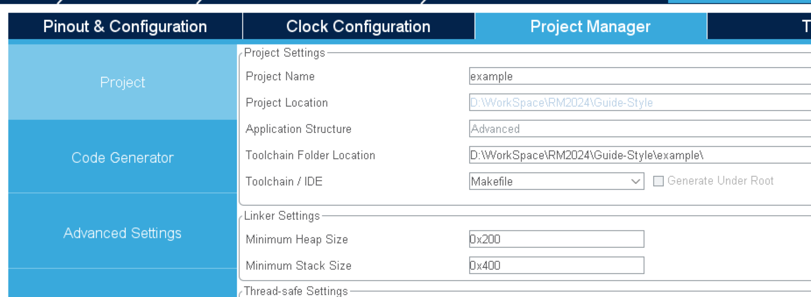 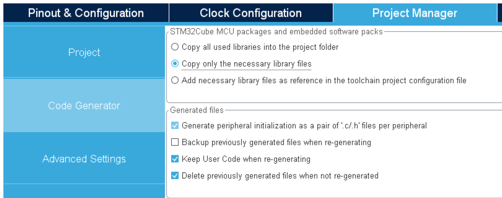 生成后的Makefile和xxxx_FLASH.ld移入CMake路径
推荐使用CMake插件
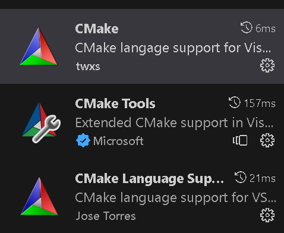
CMake编译器设置为未指定
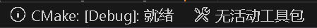
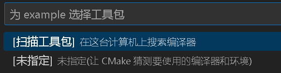
插件自动选择在build路径下编译，也可自行设置
插件可选择生成目标，可选择编译执行文件还是文档
todo: 配置vscode的clang
todo: cortex-debug+openocd
https://zhuanlan.zhihu.com/p/72549457
参考稚晖君知乎文章
看稚晖君知乎文章会发现Clion需要用到MINGW，MINGW实际上的用途应该是编译CMakeLists.txt的生成文件，在VScode未指定编译器的情况下，自动选择MINGW编译，若选择了gcc-arm-none-eabi，在生成前会进行测试并显示错误，此时需在cmake文件的project前添加
当前项目使用的编译器是gcc-arm-none-eabi，但CMake实际上能支持Keil的armcc和armclang编译器，但配置仍需调试。
armclang.make在最终armlink时出现Error: L6236E: No section matches selector错误，但startup_stm32f407xx.s已加入并编译。armcc.make没有继续调试，后期有空再看
CMake官方项目其实有给出armcc和armclang的配置，可继续尝试
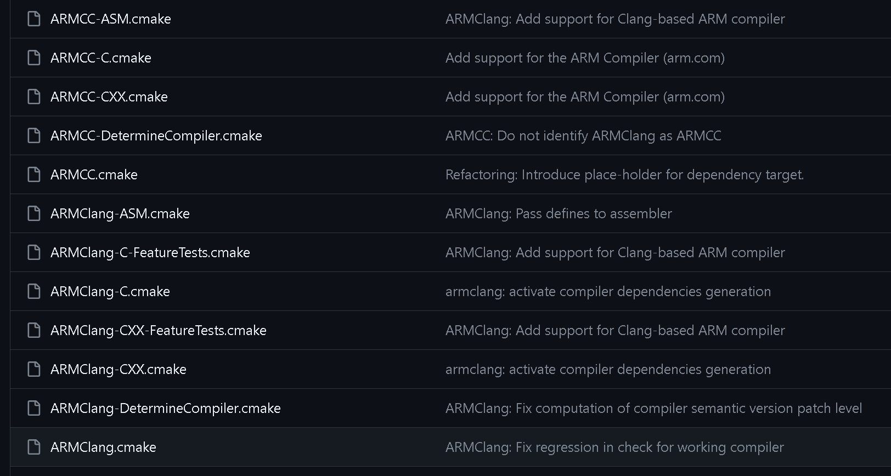
CMake官方Github
若是国产芯片或盗版ST芯片在烧录或调试时会显示Not a genuine St Device! Abort connection，Keil可以通过修改后继续烧录，STM32CubeIDE用网上的方法无法绕过。虽然现在用Clion或VScode，但难保有一天gdb添加了验证功能，留个记录供参考。 已尝试方法：
用IDA进行分析ST-LINK_gdbserver.exe，0x40D6AC函数为判断连接状态，其中0x40D7EC函数返回0x12时为检测到盗版芯片
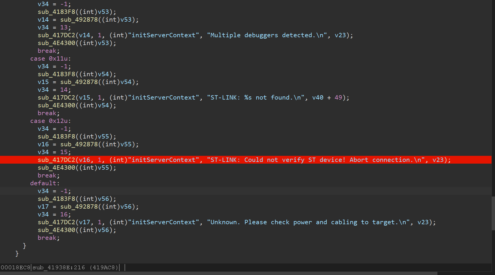
可见Patch一下即可，但STM32CubeIDE还检测单片机的ID，由于gdb是通过socket通信的，可以用wireshark抓包对比一下正版和盗版。
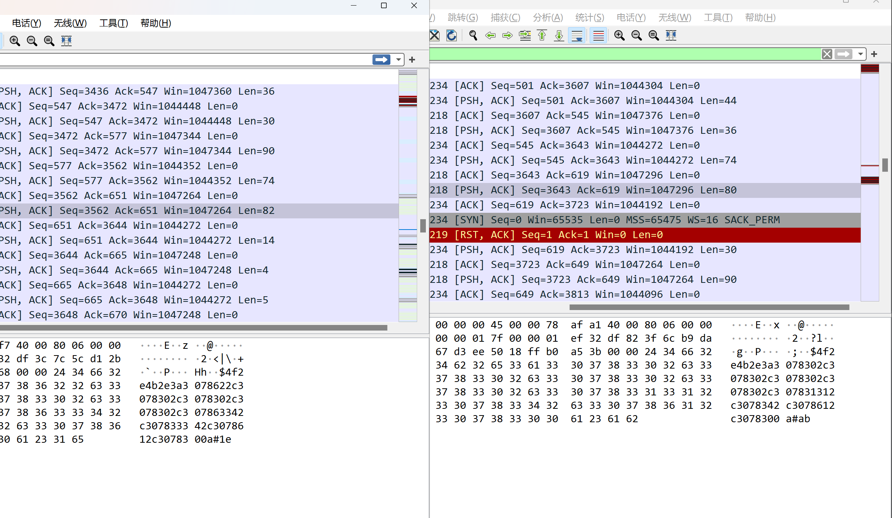
结合IDA调试可见有一段类似于验证，通过dll注入修改ws2_32的send函数并修改最终能正常使用。检测是否为验证通信的逻辑有待改善，但此方法可令STM32CubeIDE正常调试
HackSTlinkGDB源码
可参考暴力升级ST-Link
doxygen是一个出色的生成文档的工具，不但能根据源码注释生成文档，还支持Markdown，下面介绍一下本文档的配置设定。文档文件结构如下
doxygen基本支持Markdown的所有功能，甚至可以在Markdown里用doxygen的一些功能，见测试文章，所以推荐使用Markdown编写文档，毕竟方便且可专注于编写文档内容。
下面给出了一个文档格式例子
{#testpage1}定义了这个文档的label，别的文档或目录可根据label引用。例如在其他文档用[测试文档1](@ref #testpage1)即可实现跳转到这个文档的链接。 \include xxx可实现范例代码的插入，其中范例代码必须放在examples路径下。 image路径内，编写md的时候记得设置一下图片保存路径[TOC]是生成目录，非常建议开启Docs/CMakeLists.txt配置了一些内容
EMEDDED_DOXY_PROJECT_NAME，EMEDDED_DOXY_PROJECT_NUMBER，EMEDDED_DOXY_PROJECT_BRIEF见下图 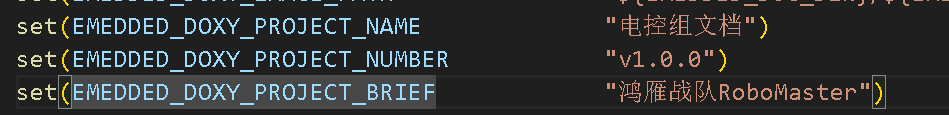
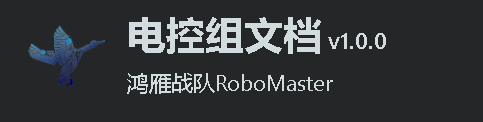
EMEDDED_DOC_TREE和EMEDDED_DOC_ENDTREE定义了目录头尾的文档，格式如下
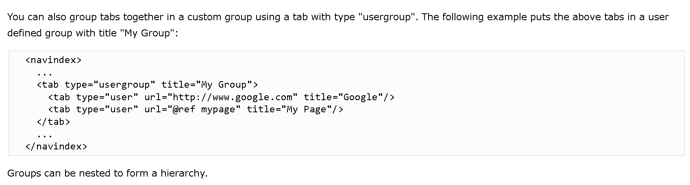
EMEDDED_DOC_TREE在介绍后插入，EMEDDED_DOC_ENDTREE在文件后插入，详细的见doxygen文档及DoxygenLayout.xml.in文件
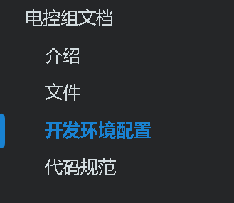
可用usergroup做到子目录，usergroup也可配置文档
EMEDDED_DOXY_EXCLUDE_PATTERNS可以让doxygen排除源代码目录，编译目录等
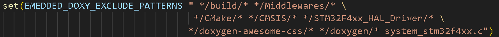
插件全上了，详细见文档，其中需要修改header.html等doxygen配置，插件配置并未写在cmake中。
doxygen 1.9.8版本实际上还未完成翻译中文，但大部分已翻译，没翻译的可自行替换，例如topics
注：doxygen的module貌似已经意思是c++20的模块特性，topics以前doxygen就翻译为模块。
其次，doxygen1.9.8以前的版本Markdown的@ref定向会有点问题